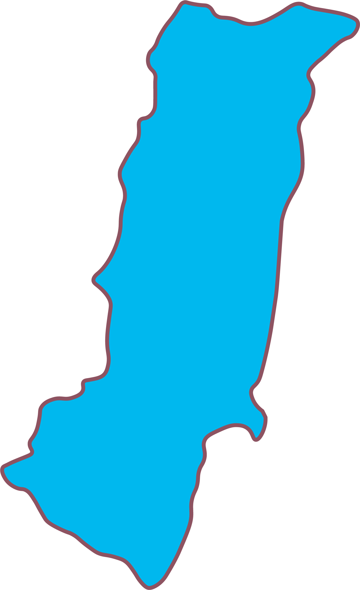
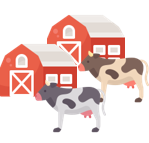

花蓮地區
特色
資訊介紹
花蓮地區
花蓮地區，位於臺灣本島東部。古稱奇萊、洄瀾、多羅滿。是臺灣面積最大的縣級行政區。花蓮地區是台灣原住民最多的區域，境內原住民以台灣原住民第一大族阿美族分布最廣。
花蓮大西瓜
遠雄海洋公園
瑞穗牧場
找找看
======= onclick="location.href='../../view/game/gophers.html';mouseDownText('打地鼠');" />
打地鼠
>>>>>>> 715822d1a8f4b3a2d02cd12e126cfb1d89b70176

 ======= onclick="location.href='../../view/game/gophers.html';mouseDownText('打地鼠');"
/>
======= onclick="location.href='../../view/game/gophers.html';mouseDownText('打地鼠');"
/>